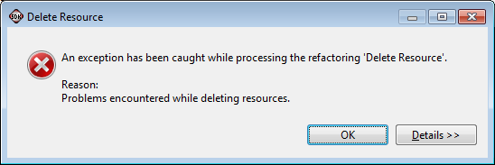
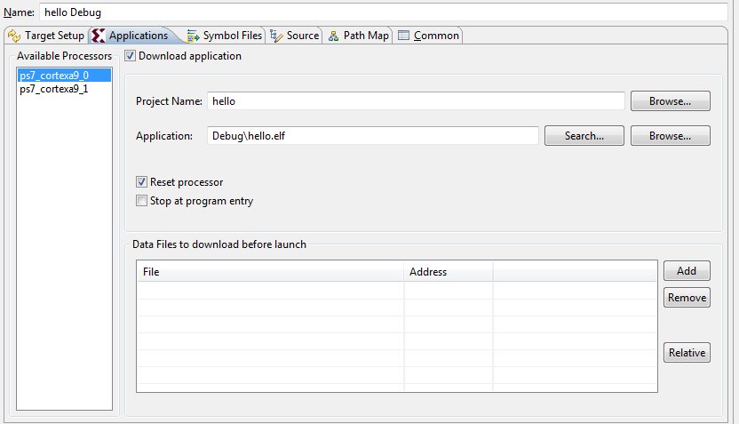
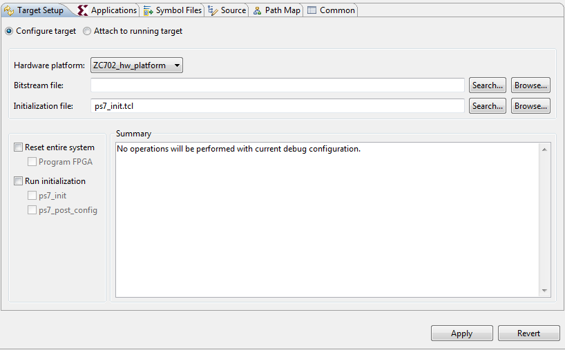
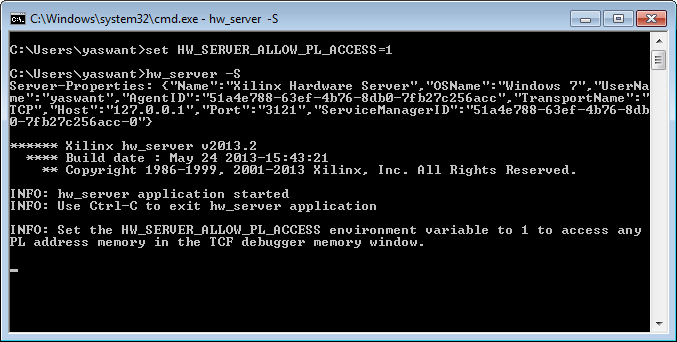
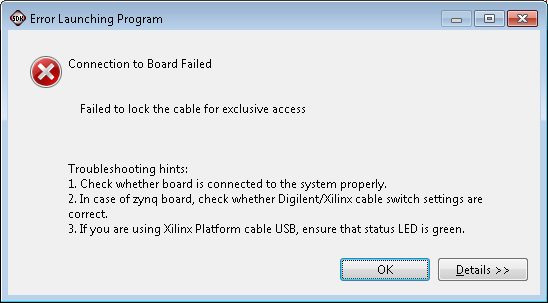

SDK System Debugger (TCF)
It is preferable to use the Xilinx C++ application, System Debugger (TCF). Use Xilinx C/C++ Debugger (GDB) when you want to debug Linux applications.
Because XMD supports one cable type at a time, it is required to terminate any active GDB launches.
Hover the mouse on the global variable to see the value of the global variable.
Use the Remote ARM Linux Application configuration to debug Linux Applications.

The workaround for this issue is to wait for four seconds after debugging, then try deleting the application..
Use Xilinx C/C++ Debugger (GDB) debugger to profile the Standalone applications.
If you wish to start debugging from program entry, enable the Stop at program entry checkbox in the debug configuration, as shown below..

SDK does a processor reset on every debug session. The interrupt controller is not reset during processor reset. Change the reset type to System Reset in Target Setup tab of debug configuration, as shown below.

Note: this is applicable only if you terminate a debug session while the processor is in interrupt context.
By default these registers are not shown. Set an environment variable HW_SERVER_ALLOW_PL_ACCESS in the command prompt, then launch hw_server, as shown below.

BSP projects use “Makebuilder” to build BSP applications. When the Project > Build Automatically option is set, both the “Build Project” and “Clean Project” context menu options are invisible, but any changes made to the BSP project triggers auto build. If you wish to see “Build Project” and “Clean Project” for a BSP project, disable the Project > Build Automatically option.
The workaround is to close the Disassembly view and proceed with debugging.

The workaround for this issue is to restart the board. This issue will be resolved in the next release.
This issue occurs in some scenarios. It will be fixed in the next release.
This issue occurs in some scenarios. It will be fixed in the next release.
The workaround is to use Xilinx C/C++ Debugger (GDB). This issue will be fixed in next release.
This issue shows up with some designs and will be fixed in the next release.
This issue will be fixed in the next release.
This issue occurs with older BSPs. To fix it, modify the BSP settings to use the latest CPU driver (1.15a) by going to Board Support Package Settings > Drivers > CPU > Driver Version.
As XMD supports one cable type at a time, it is required to terminate any active launches.
Hover the mouse on the global variable to see the value of the global variable or use Xilinx Standard debugger (XMD) to see the global variables values.
Use Remote ARM Linux Application configuration to debug Linux Applications.
Use Xilinx Standard debugger to debug the MicroBlaze applications.
Use Xilinx Standard debugger to profile the Standalone applications.
CDT static code analysis is run on your source code by default. Some of the code analysis issues are reported as errors by default. You can switch Code Analysis Severity to Info from Error by going to Window > Preferences > C/C++ > Code Analysis.
Use Xilinx Standard debugger to profile the Standalone applications.
Internally a breakpoint/watchpoint planted by user is treated as Hardware breakpoints in System Debugger (TCF). For ARM there is a limitation of 6 Hardware breakpoints. Out of 6, one breakpoint is used for the single stepping, other breakpoint is used for stopping at main(). So users are left with four breakpoints. Software breakpoints (No limitation on number of breakpoints) support will be added in next release.
Use Xilinx Standard debugger to profile the Standalone applications.
SDK does processor reset on every debug session. The Interrupt Controller is not reset during Processor reset. Change the reset type to System Reset in the Device Initialization tab of debug configuration.
By default these registers are not shown. Set an environment variable, HW_SERVER_ALLOW_PL_ACCESS, in the command prompt, then launch the hw_server.
This is a change introduced with the latest silicon versions. If you are debugging PS+PL design and have the Reset Entire System option in the debug configuration, perform program FPGA when the debugger stops at application main().
This is a known issue.
Turn off verbose mode in SDK XMD console.
BSP projects uses Makebuilder to build BSP applications. When the Project > Build Automatically option is set, both Build Project and Clean Project are not visible, but any changes made to the BSP project triggers an auto-build. To see these context menu options for a BSP project, unset the Project > Build Automatically option.
If you never plugin the digilent cable, you can run into this issue. Plug-in the digilent cable; this copies the required libraries.
Copyright 1995-2013 Xilinx, Inc. All rights reserved.